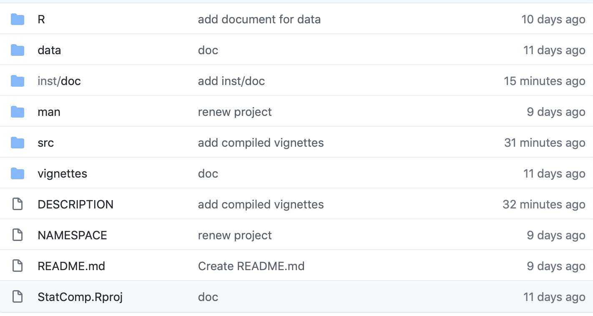

Chapter 6 发布R包到GitHub
6.1 R包的常用发布平台
下面是常用的可用于发布R包的公共平台：
GitHub 该平台发布的内容不仅限于R包，还包括其他任何代码。GitHub的管理对开发者较为友好，对于R包内容不会进行任何审核，因此需要开发者自己确保所上传的R包可用。
CRAN CRAN是Comprehensive R Archive Network的缩写，截止到2022年12月12日，管理着18910个R包，其中R包都经过非常严格的测试，因此深受使用者信任，但对于开发者的要求也是最苛刻的（提交网址：https://cran.r-project.org/submit.html）。
Bioconductor Bioconductor是专门用于管理生物信息学R包的平台，截止到2022年12月12日，管理着2183个R包，其提交网址为https://contributions.bioconductor.org/submission-overview.html。
R-Forge 截止到2022年12月12日，R-Forge管理着2146个项目，其网址是https://r-forge.r-project.org/register/。
…
下面仅介绍如何将R包发布到GitHub。
6.2 发布R包到GitHub的流程
下面给出将R包发布到GitHub的流程，细节可参看这个网页：https://r-pkgs.had.co.nz/git.html。
- 安装与配置git
- 首先需要安装软件git，该软件可从https://git-scm.com/downloads下载。
- 打开R包项目（鼠标双击.Rproj文件）。
- 点击Rstudio的菜单Tools，接着点击Project Options…，在弹出的窗口左侧点击Git/SVN，如此时弹出的Version control system右侧小窗口显示为(NONE)则将其改为Git，点击OK就配置好了Git，此时Rstudio右上边的菜单里会有一个选项Git。
- 在GihHub上创建账户和令牌
- 打开GitHub的登录界面https://github.com/，创建一个账户（需要有相应的e-mail地址）。如本文示例中创建的用户名是zhanghustc，相应的e-mail地址为325150499@qq.com。
- 自从2021年开始，向GitHub提交R包需要一个令牌（token），浏览网页https://blog.csdn.net/qq_40226073/article/details/119801341可查看创建令牌的详细过程。创建好令牌后，强烈建议将其保存在一个安全的地方（GitHub网站上查询不到创建的令牌）！
- 创建一个新的仓库（repository，即R包名），本文示例用的仓库名为StatComp。注意创建好仓库后不要添加任何内容（含readme），否则在上传R包时会有障碍！
- 在DESCRIPTION添加两行内容：
URL: http://github.com/username/R-package
BugReports: http://github.com/username/R-package/issues需要将上面的username（2处）和R-package（2处）改成实际的用户名和仓库名。
- 忽略掉一些冗余文件
R包一旦创建好之后，会产生一些冗余文件，这些文件在GitHub上是不允许存在的，因此需要删除掉。常见的冗余文件包括：文件夹Meta；文件夹src下面的.o、.so和.dll文件；文件夹doc；隐藏文件.Rproj.user和.DS_Store。 在文件.gitignore中输入想要忽略的文件和文件夹，例如.gitignore可包含如下内容：
doc
Meta
.Rproj.user
src/*.o
src/*.so
src/*.dll
.DS_Store # macOS Files将R包上传到GitHub上
git init # 初始化 git add * # 添加本地文件夹和文件 git commit -m "first commit" # 添加一个注释 git config --global user.name "username" # 指定用户名 git config --global user.email "e-mail-address" # 指定e-mail地址 git branch -M master # 默认将R包上传到仓库的分支master下 git remote add origin https://token@github.com/username/R-package.git # 指定GitHub上的仓库及令牌 (“token”需要更换成生成的token，这是一个比较长的字符串) git push -u origin master # 将本地仓库推送到GitHub注意需要将上面的username（2处）、R-package（1处）、e-mailaddress（1处）和token（1处）改成实际的用户名、仓库名、e-mail地址和令牌。
更新GitHub上仓库内容
可以随时更新GitHub上的仓库内容，比如要添加文件夹FOLD和文件FILE（允许添加任意多个），则可以在终端中输入如下脚本：
git add FOLD FILE # 添加文件FOLD和文件FILE
git commit -m "renew something" # 添加一个注释
git push -u origin master # 同步到GitHub上- 删除GitHub上仓库内容
例如想要删除掉GitHub上仓库里的文件/文件夹“filename”，只需要在终端中输入如下脚本：
git pull origin master # 先将GitHub上的仓库拖到本地
ll # 浏览文件清单
git rm --cached filename # 删除文件/文件夹“filename”
git commit -m "delete filename" # 添加一个注释
git push -u origin master # 同步到GitHub上如上传（或许有更新和删除）到GitHub上仓库StatComp的内容显示结果如下： 
- 在本地R上安装GitHub上的R包
一旦将R包上传到GitHub上后，可以用R包devtools里的函数install_github安装，安装时可以选择编译vignettes，也可以不编译vignettes。
（1）编译vignettes（可能比较耗时）devtools::install_github("username/R-package", build_vignettes = TRUE, force=T)（2）不编译vignettes（节省时间）devtools::install_github("username/R-package")上述username和R-package应改成实际的用户名和R包名。
注：建议编译好vignettes后再上传至GihHub，这样使用者只需要采用默认的安装方式，可以有效节省安装R包的时间。